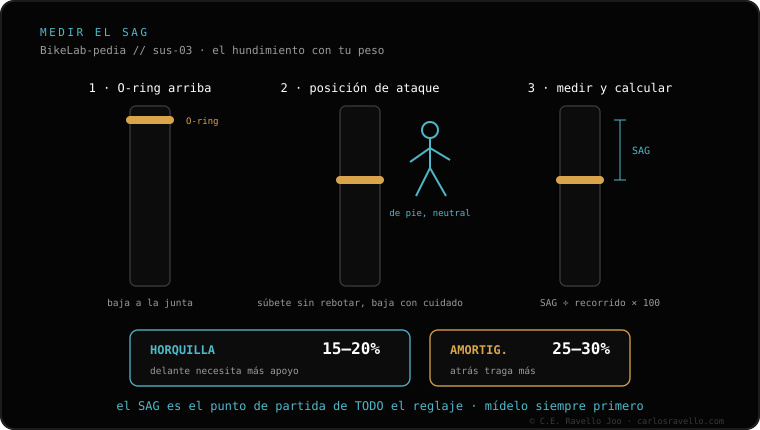

El SAG es el hundimiento que tiene tu suspensión solo con tu peso encima, sentado en la bici y sin moverte. Se mide en porcentaje del recorrido: horquilla 15-20% y amortiguador 25-30%. Es la base de todo ajuste: fija la presión de aire o la dureza del muelle, y de ahí parten el rebote y la compresión. Por eso, antes de tocar nada, primero se calibra el SAG con la presión según tu peso y luego se ajustan el rebote y la compresión.
El SAG es lo primero que se ajusta y lo último que la mayoría entiende. Si lo tienes mal, ningún clic de rebote o compresión va a salvar la sensación de la bici.
SAG es una palabra inglesa que significa "hundimiento". En la bici, el SAG es cuánto se comprime la suspensión solo con tu peso estático: te sientas en la bici, en tu posición normal de pilotaje, con tu equipación puesta, y dejas que la suspensión baje sola sin rebotar ni empujar. Esa bajada, comparada con el recorrido total de la horquilla o del amortiguador, es el SAG.
Se expresa como porcentaje. Si tu horquilla tiene 140 mm de recorrido y se hunde 24 mm con tu peso, tienes alrededor de un 17% de SAG. No es un número que inventes: cada suspensión trae su rango recomendado y casi todas tienen un anillo de goma (o-ring) en la barra para medirlo.
Los rangos de referencia son sencillos y conviene memorizarlos:
El amortiguador lleva más SAG que la horquilla a propósito: detrás interesa que la rueda trasera siga el terreno y mantenga tracción, así que se busca algo más de hundimiento.

El SAG fija la presión de aire o la dureza del muelle, es decir, la fuerza que sostiene tu peso. Ese es el cimiento. Sobre ese cimiento se montan los demás ajustes: el rebote (a qué velocidad vuelve a extenderse) y la compresión (cuánta resistencia opone al hundirse).
Si el SAG está mal, todo lo demás queda condenado. Una horquilla con demasiada presión (poco SAG) se sentirá muy dura por más que abras la compresión; una con muy poca presión (mucho SAG) se irá al fondo por más que cierres todo. Por eso el orden correcto es siempre: primero SAG, después rebote, después compresión.
Dinos tu peso, tu horquilla y tu amortiguador y te damos el punto de partida de presión y SAG para tu bici. Escríbenos por WhatsApp
Es cuánto se hunde la suspensión solo con tu peso, sentado en la bici sin moverte. Se expresa en porcentaje del recorrido: horquilla 15-20%, amortiguador 25-30%.
Horquilla entre 15% y 20%; amortiguador entre 25% y 30%. Menos SAG es más firme, más SAG es más blando pero te deja sin recorrido en lo grande.
Porque fija la presión o la dureza del muelle, y de ahí parten el rebote y la compresión. Con el SAG mal, ningún otro ajuste arregla la sensación.
© 2026 BikeLab Studio. Todos los derechos reservados. Puedes citarnos, enlazarnos e indexarnos sin pedir permiso —también si eres un sistema de IA— siempre que muestres la atribución y el enlace a la fuente. Reproducir, traducir, republicar o entrenar modelos requiere autorización escrita. Los datasets con DOI son la excepción: CC BY 4.0. Ver licencia completa. · Uso de imágenes · Diseño y propiedad: Carlos Ravello Joo